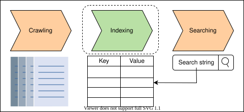
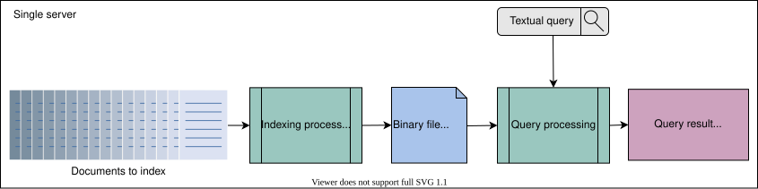
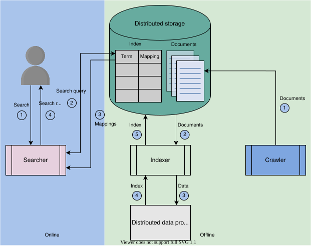
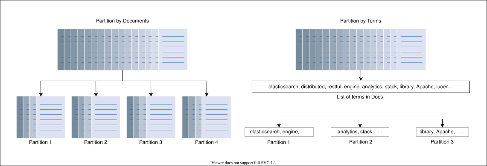
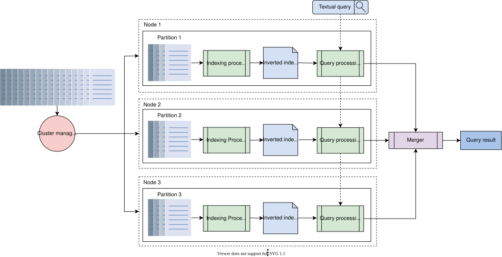
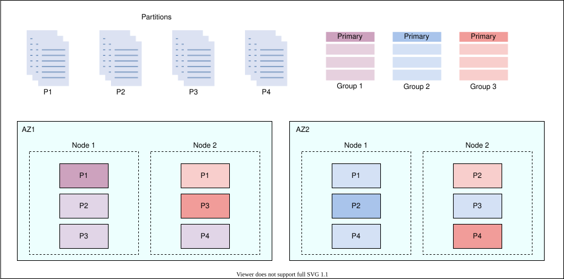
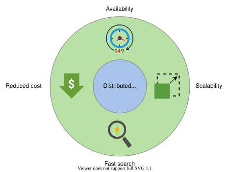

21. Distributed Search
System Design: The Distributed Search
System Design: The Distributed Search
Learn about how a search system works and understand our high-level plan for designing a distributed search system.
Why do we need a search system?#
Nowadays, we see a search bar on almost every website. We use that search bar to pick out relevant content from the enormous amount of content available on that website. A search bar enables us to quickly find what we’re looking for. For example, there are plenty of courses present on the Google website. If we didn’t have a search feature, users would have to scroll through many pages and read the name of each course to find the one they’re looking for.
Let’s take another example. There are billions of videos uploaded and stored on YouTube. Imagine if YouTube didn’t provide us with a search bar. How would we find a specific video among the millions of videos that have been posted on YouTube over the years? It would take months to navigate through all of those videos and find the one we need. Users find it challenging to find what they’re looking for simply by scrolling around.
Search engines are an even bigger example. We have billions of websites on the Internet. Each website has many web pages and there is plenty of content on each of these web pages. With so much content, the Internet would practically be useless without search engines, and users would end up lost in a sea of irrelevant data. Search engines are, essentially, filters for the massive amount of data available. They let users quickly obtain information that is of true interest without having to sift through too many unnecessary web pages.
Behind every search bar, there is a search system.
What is a search system?#
A search system is a system that takes some text input, a search query, from the user and returns the relevant content in a few seconds or less. There are three main components of a search system, namely:
- A crawler, which fetches content and creates documents.
- An indexer, which builds a searchable index.
- A searcher, which responds to search queries by running the search query on the index created by the indexer.

Note: We have a separate chapter dedicated to the explanation of the crawler component. In this chapter, we’ll focus on indexing.
How will we design a distributed search system?#
We divided the design of a distributed search system into five lessons:
- Requirements: In this lesson, we list the functional and non-functional requirements of a distributed search system. We also estimate our system’s resources, such as servers, storage, and the bandwidth needed to serve a number of queries.
- Indexing: This lesson provides us with background knowledge on the process of indexing with the help of an example. After discussing indexing, we also look into a centralized architecture of distributed search systems.
- Initial design: This lesson consists of the high-level design of our system, its API, and the details of the indexing and searching process.
- Final design: In this lesson, we evaluate our previous design and revamp it to make it more scalable.
- Evaluation: This lesson explains how our designed distributed search system fulfills its requirements.
Let’s start by understanding the requirements of designing a distributed search system.
Requirements of a Distributed Search System's Design
Requirements of a Distributed Search System's Design
Let's identify the requirements of a distributed search system and outline the resources we need.
Non-functional requirements#
Here are the non-functional requirements of a distributed search system:
- Availability: The system should be highly available to the users.
- Scalability: The system should have the ability to scale with the increasing amount of data. In other words, it should be able to index a large amount of data.
- Fast search on big data: The user should get the results quickly, no matter how much content they are searching.
- Reduced cost: The overall cost of building a search system should be less.
Resource estimation#
Let’s estimate the total number of servers, storage, and bandwidth that is required by the distributed search system. We’ll calculate these numbers using an example of a YouTube search.
Number of servers estimation#
To estimate the number of servers, we need to know how many daily active users per day are using the search feature on YouTube and how many requests per second our single server can handle. We assume the following numbers:
- The number of daily active users who use the search feature is three million.
- The number of requests a single server can handle is 1,000.
The number of servers required is calculated using this formula:
queries handled per serverNumber of active users=3K servers
If three million users are searching concurrently, three million search requests are being generated at one time. A single server handles 1,000 requests at a time. Dividing three million by 1,000 gives us 3,000 servers.
Storage estimation#
Each video’s metadata is stored in a separate JSON document. Each document is uniquely identified by the video ID. This metadata contains the title of the video, its description, the channel name, and a transcript. We assume the following numbers for estimating the storage required to index one video:
- The size of a single JSON document is 200 KB.
- The number of unique terms or keys extracted from a single JSON document is 1,000.
- The amount of storage space required to add one term into the index table is 100 Bytes.
The following formula is used to compute the storage required to index one video:
Totalstorage/video=Storage/doc+(Terms/doc×Storage/term)
Total Storage Required to Index One Video on YouTube
| Storage per JSON doc (KB) | No. of terms per doc | Storage per term (Bytes) | Total storage per video (KB) |
| 200 | 1000 | 100 | f300 |
In the table above, we calculate the storage required to index one video. We have already seen that the total storage required per video is 300 KB. Assuming that, on average, the number of videos uploaded per day on YouTube is 6,000, let’s calculate the total storage required to index the videos uploaded per day. The following formula is used to compute the storage required to index the videos uploaded to YouTube in one day:
Totalstorage/day=No. of videos/day×Totalstorage/video
Total Storage Required to Index Videos per Day on YouTube
| No. of videos per day | Total storage per video (KB) | Total storage per day(GB) |
| 6000 | 300 | f1.8 |
The total storage required to index 6,000 videos uploaded per day on YouTube is 1.8 GB. This storage requirement is just an estimation for YouTube. The storage need will increase if we provide a distributed search system as a service to multiple tenants.

Bandwidth estimation#
The data is transferred between the user and the server on each search request. We estimate the bandwidth required for the incoming traffic on the server and the outgoing traffic from the server. Here is the formula to calculate the required bandwidth:
Totalbandwidth=Totalrequests_second×Totalquery_size
Incoming traffic
To estimate the incoming traffic bandwidth, we assume the following numbers:
- The number of search requests per day is 150 million.
- The search query size is 100 Bytes.
We can use the formula given above to calculate the bandwidth required for the incoming traffic.
Bandwidth Required for Incoming Search Queries per Second
| No. of requests per second | Query size (Bytes) | Bandwidth (Mb/s) |
| 1736.11 | 100 | f1.39 |
Outgoing traffic
Outgoing traffic is the response that the server returns to the user on the search request. We assume that the number of suggested videos against a search query is 80, and one suggestion is of the size 50 Bytes. Suggestions consist of an ordered list of the video IDs.
To estimate the outgoing traffic bandwidth, we assume the following numbers:
- The number of search requests per day is 150 million.
- The response size is 4,000 Bytes.
We can use the same formula to calculate the bandwidth required for the outgoing traffic.
Bandwidth Required for Outgoing Traffic per Second
| No. of requests per second | Query size (Bytes) | Bandwidth (Mb/s) |
| 1736.11 | 4000 | f55.56 |
Note: The bandwidth requirements are relatively modest because we are assuming text results. Many search services can return small thumbnails and other media to enhance the search page. The bandwidth needs per page are intentionally low so that the service can provide near real-time results to the client.
Building blocks we will use#
We need a distributed storage in our design. Therefore, we can use the blob store, a previously discussed building block, to store the data to be indexed and the index itself. We’ll use a generic term, that is, “distributed storage” instead of the specific term “blob store.”
To conclude, we explained what the search system’s requirements are. We made resource estimations. And lastly, we mentioned the building block that we’ll use in our design of a distributed search system.
Indexing in a Distributed Search
Indexing in a Distributed Search
Learn about indexing and its use in a distributed search.
We’ll first describe what indexing is, and then we’ll make our way toward distributing indexes over many nodes.
Indexing#
Indexing is the organization and manipulation of data that’s done to facilitate fast and accurate information retrieval.
Build a searchable index#
The simplest way to build a searchable index is to assign a unique ID to each document and store it in a database table, as shown in the following table. The first column in the table is the ID of the text and the second column contains the text from each document.
ID | Document Content |
1 | Elasticsearch is the distributed and analytics engine that is based on REST APIs. |
2 | Elasticsearch is a Lucene library-based search engine. |
3 | Elasticsearch is a distributed search and analytics engine built on Apache Lucene. |
The size of the table given above would vary, depending on the number of documents we have and the size of those documents. The table above is just an example, and the content from each document only consists of one or two sentences. With an actual, real-world example, the content of every document in the table could be pages long. This would make our table quite large. Running a search query on the document-level index given above isn’t a fast process. On each search request, we have to traverse all the documents and count the occurrence of the search string in each document.
Note: For a fuzzy search, we also have to perform different pattern-matching queries. Many strings in the documents would somehow match the searched string. First, we must find the unique candidate strings by traversing all of the documents. Then, we must single out the most approximate matched string out of these strings. We also have to find the occurrence of the most matched string in each document. This means that each search query takes a long time.
The response time to a search query depends on a few factors:
- The data organization strategy in the database.
- The size of the data.
- The processing speed and the RAM of the machine that’s used to build the index and process the search query.
Running search queries on billions of documents that are document-level indexed will be a slowprocess, which may take many minutes, or even hours. Let’s look at another data organization and processing technique that helps reduce the search time.
Inverted index#
An inverted index is a HashMap-like data structure that employs a document-term matrix. Instead of storing the complete document as it is, it splits the documents into individual words. After this, the document-term matrix identifies unique words and discards frequently occurring words like “to,” “they,” “the,” “is,” and so on. Frequently occurring words like those are called terms. The document-term matrix maintains a term-level index through this identification of unique words and deletion of unnecessary terms.
For each term, the index computes the following information:
- The list of documents in which the term appeared.
- The frequency with which the term appears in each document.
- The position of the term in each document.
Term | Mapping ( [doc], [freq], [[loc]) |
elasticsearch | ( [1, 2, 3], [1, 1, 1], [[1], [1], [1]] ) |
distributed | ( [1, 3], [1, 1], [[4], [4]] ) |
restful | ( [1], [1], [[5]] ) |
search | ( [1, 2, 3], [1, 1, 1], [[6], [4], [5]] ) |
analytics | ( [1, 3], [1, 1], [[8], [7]] ) |
engine | ( [1, 2, 3], [1, 1, 1], [[9], [5], [8]] ) |
heart | ( [1], [1], [[12]] ) |
elastic | ( [1], [1], [[15]] ) |
stack | ( [1], [1], [[16]] ) |
lucene | ( [2, 3], [1, 1], [[9], [12]] ) |
library | ( [2], [1], [[10]] ) |
Apache | ( [3], [1], [[11]] ) |
In the table above, the “Term” column contains all the unique terms that are extracted from all of the documents. Each entry in the “Mapping” column consists of three lists:
- A list of documents in which the term appeared.
- A list that counts the frequency with which the term appears in each document.
- A two-dimensional list that pinpoints the position of the term in each document. A term can appear multiple times in a single document, which is why a two-dimensional list is used.
Note: Instead of lists, the mappings could also be in the form of tuples— such as doc, freq, and loc.
Inverted index is one of the most popular index mechanisms used in document retrieval. It enables efficient implementation of boolean, extended boolean, proximity, relevance, and many other types of search algorithms.
Advantages of using an inverted index
- An inverted index facilitates full-text searches.
- An inverted index reduces the time of counting the occurrence of a word in each document at the run time because we have mappings against each term.
Disadvantages of using an inverted index
- There is storage overhead for maintaining the inverted index along with the actual documents. However, we reduce the search time.
- Maintenance costs (processing) on adding, updating, or deleting a document. To add a document, we extract terms from the document. Then, for each extracted term, we either add a new row in the inverted index or update an existing one if that term already has an entry in the inverted index. Similarly, for deleting a document, we conduct processing to find the entries in the inverted index for the deleted document’s terms and update the inverted index accordingly.
Searching from an inverted index#
Consider a system that has the following mappings when we search for the word “search engine:”
Term | Mapping |
search | ( [1, 2, 3], [1, 1, 1], [[6], [4], [5]] ) |
engine | ( [1, 2, 3], [1, 1, 1], [[9], [5], [8]] ) |
Both of these words are found in documents 1, 2, and 3. Both words appear once in each document.
The word “search” is located at position 6 in document 1, at position 4 in document 2, and position 5 in document 3.
The word “engine” is located at position 9 in document 1, position 5 in document 2, and position 8 in document 3.
A single term can appear in millions of documents. Thus, the list of documents returned against a search query could be very long.
Question
Would this technique work when too many documents are found against a single term?
Factors of index design#
Here are some of the factors that we should keep in mind while designing an index:
- Size of the index: How much computer memory, and RAM, is required to keep the index. We keep the index in the RAM to support the low latency of the search.
- Search speed: How quickly we can find a word from an inverted index.
- Maintenance of the index: How efficiently the index can be updated if we add or remove a document.
- Fault tolerance: How critical it is for the service to remain reliable. Coping with index corruption, supporting whether invalid data can be treated in isolation, dealing with defective hardware, partitioning, and replication are all issues to consider here.
- Resilience: How resilient the system is against someone trying to game the system and guard against search engine optimization (SEO) schemes, since we return only a handful of relevant results against a search.
In light of the design factors listed above, let’s look at some problems with building an index on a centralized system.
Indexing on a centralized system#
In a centralized search system, all the search system components run on a single node, which is computationally quite capable. The architecture of a centralized search system is shown in the following illustration:

- The indexing process takes the documents as input and converts them into an inverted index, which is stored in the form of a binary file.
- The query processing or search process interprets the binary file that contains the inverted index. It also computes the intersection of the inverted lists for a given query to return the search results against the query.
These are the problems that come with the architecture of a centralized search system:
- SPOF (single point of failure)
- Server overload
- Large size of the index
SPOF: A centralized system is a single point of failure. If it’s dead, no search operation can be performed.
Server overload: If numerous users perform queries and the queries are complicated, it stresses the server (node).
Large size of the index: The size of the inverted index increases with the number of documents, placing resource demands on a single server. The bigger the computer system, the higher the cost and complexity of managing it.
Note: With a distributed system, low-cost computer systems are utilized, which is cost effective overall.
An inverted index needs to be loaded into the main memory when adding a document or running a search query. A large portion of the inverted index must fit into the RAM of the machine for efficiency.
According to Google analytics in 2022, there are hundreds of billions of web pages, the total size of which is around 100 petabytes. If we make a search system for the worldwide web, the inverted index size will also be in petabytes. This means we have to load petabytes of data into the RAM. It’s impractical and inefficient to increase the resources of a single machine for indexing a billion pages instead of shifting to a distributed system and utilizing the power of parallelization. Running a search query on a single, large inverted index results in a slow response time.
Note: Searching a book from a shelf that holds a hundred books is easier than searching a book from a shelf holding a million books. The search time increases with the volume of data we search from.
Attacks on centralized indexing can have a higher impact than attacks on a distributed indexing system. Furthermore, the odds of bottlenecks (which can arise in server bandwidth or RAM) are also lower in a distributed index.
In this lesson, we learned about indexing, and we looked into the problems of indexing on a centralized system. The next lesson presents a distribution solution for indexing.
Design of a Distributed Search
Design of a Distributed Search
Get an overview of the design of a distributed search system that manages a large number of queries per second.
High-level design#
Let’s shape the overall design of a distributed search system before getting into a detailed discussion. There are two phases of such a system, as shown in the illustration below. The offline phase involves data crawling and indexing in which the user has to do nothing. The online phase consists of searching for results against the search query by the user.

- The crawler collects content from the intended resource. For example, if we build a search for a YouTube application, the crawler will crawl through all of the videos on YouTube and extract textual content for each video. The content could be the title of the video, its description, the channel name, or maybe even the video’s annotation to enable an intelligent search based not only on the title and description but also on the content of that video. The crawler formats the extracted content for each video in a JSON document and stores these JSON documents in a distributed storage.
- The indexer fetches the documents from a distributed storage and indexes these documents using MapReduce, which runs on a distributed cluster of commodity machines. The indexer uses a distributed data processing system like MapReduce for parallel and distributed index construction. The constructed index table is stored in the distributed storage.
- The distributed storage is used to store the documents and the index.
- The user enters the search string that contains multiple words in the search bar.
- The searcher parses the search string, searches for the mappings from the index that are stored in the distributed storage, and returns the most matched results to the user. The searcher intelligently maps the incorrectly spelled words in the search string to the closest vocabulary words. It also looks for the documents that include all the words and ranks them.
API design#
Since the user only sends requests in the form of a string, the API design is quite simple.
Search: The search function runs when a user queries the system to find some content.
search(query)
Parameter | Description |
| This is the textual query entered by the user in the search bar, based on which the results are found. |
Detailed discussion#
Since the indexer is the core component in a search system, we discussed an indexing technique and the problems associated with centralized indexing in the previous lesson. In this lesson, we consider a distributed solution for indexing and searching.
Distributed indexing and searching#
Let’s see how we can develop a distributed indexing and searching system. We understand that the input to an indexing system is the documents we created during crawling. To develop an index in a distributed fashion, we employ a large number of low-cost machines (nodes) and partition or divide the documents based on the resources they have. All the nodes are connected. A group of nodes is called a cluster.
We use numerous small nodes for indexing to achieve cost efficiency. This process requires us to partition or split the input data (documents) among these nodes. However, a key question needs to be addressed: How do we perform this partitioning?
The two most common techniques used for data partitioning in distributed indexing are these below:
- Document partitioning: In document partitioning, all the documents collected by the web crawler are partitioned into subsets of documents. Each node then performs indexing on a subset of documents that are assigned to it.
- Term partitioning: The dictionary of all terms is partitioned into subsets, with each subset residing at a single node. For example, a subset of documents is processed and indexed by a node containing the term “search.”

In term partitioning, a search query is sent to the nodes that correspond to the query terms. This provides more concurrency because a stream of search queries with different query terms will be served by different nodes. However, term partitioning turns out to be a difficult task in practice. Multiword queries necessitate sending long mapping lists between groups of nodes for merging, which can be more expensive than the benefits from the increased concurrency.
In document partitioning, each query is distributed across all nodes, and the results from these nodes are merged before being shown to the user. This method of partitioning necessitates less inter-node communication. In our design, we use document partitioning.
Following document partitioning, let’s look into a distributed design for index construction and querying, which is shown in the illustration below. We use a cluster that consists of a number of low-cost nodes and a cluster manager. The cluster manager uses a MapReduce programming model to parallelize the index’s computation on each partition. MapReduce can work on significantly larger datasets that are difficult to be handled by a single large server.

The system described above works as follows:
Indexing
- We have a document set already collected by the crawler.
- The cluster manager splits the input document set into N number of partitions, where N is equal to three in the illustration above. The size of each partition is decided by the cluster manager given the size of the data, the computation, memory limits, and the number of nodes in the cluster. All the nodes may not be available for various reasons. The cluster manager monitors the health of each node through periodic heartbeats. To assign a document to one of the N partitions, a hashing function can be utilized.
- After making partitions, the cluster manager runs indexing algorithms for all the N partitions simultaneously on the N number of nodes in a cluster. Each indexing process produces a tiny inverted index, which is stored on the node’s local storage. In this way, we produce N tiny inverted indices rather than one large inverted index.
Searching
- In the search phase, when a user query comes in, we run parallel searches on each tiny inverted index stored on the nodes’ local storage generating N queries.
- The search result from each inverted tiny index is a mapping list against the queried term (we assume a single word/term user query). The merger aggregates these mapping lists.
- After aggregating the mapping lists, the merger sorts the list of documents from the aggregated mapping list based on the frequency of the term in each document.
- The sorted list of documents is returned to the user as a search result. The documents are shown in sorted (ascending) order to the user.
Note: We’ve designed a search system where we utilized a distributed system and parallelized the indexing and searching process. This helped us handle large datasets by working on the smaller partitions of documents. It should be noted that both searching and indexing are performed on the same node. We refer to this idea as colocation.
The proposed design works, and we can replicate it across the globe in various data centers to facilitate all users. Thus, we can achieve the following advantages:
- Our design will not be subject to a single point of failure (SPOF).
- Latency for all users will remain small.
- Maintenance and upgrades in individual data centers will be possible.
- Scalability (serving more users per second) of our system will be improved.
Replication#
We make replicas of the indexing nodes that produce inverted indices for the assigned partitions. We can answer a query from several sets of nodes with replicas. The overall concept is simple. We continue to use the same architecture as before, but instead of having only one group of nodes, we have R groups of nodes to answer user queries. R is the number of replicas. The number of replicas can expand or shrink based on the number of requests, and each group of nodes has all the partitions required to answer each query.
Each group of nodes is hosted on different availability zones for better performance and availability of the system in case a data center fails.Note: A load balancer component is necessary to spread the queries across different groups of nodes and retry in case of any error.
Replication factor and replica distribution#
Generally, a replication factor of three is enough. A replication factor of three means three nodes host the same partition and produce the index. One of the three nodes becomes the primary node, while the other two are replicas. Each of these nodes produces indexes in the same order to converge on the same state.
To illustrate, let’s divide the data, a document set, into four partitions. Since the replication factor is three, one partition will be hosted by three nodes. We’ll assume that there are two availability zones (AZ1 and AZ2). And in each availability zone, we have two nodes. Each node acts as a primary for only one partition (For example, Node 1 in AZ1 is the primary node for partition P1). The three copies (pink, blue, and purple) for a partition are shared between the two AZ instances so that two copies are in one zone and the third copy is in another zone. Three colors represent three replicas of each partition. For example, the following is true for partition P4:
- The first replica, represented by the color pink, is placed in Node 2 of AZ2
- The second replica, represented by the color blue, is placed in Node 1 of AZ2
- The third replica, represented by the color purple, is placed in Node 2 of AZ1
Each group in the illustration below consists of one replica from all of the four partitions (P1, P2, P3, P4)

In the above illustration, the primary replica for P1 is indicated by the dark purple color, the primary replica for P2 is represented by the dark blue color, and the primary replica for P3 and P4 is represented by the dark pink color.
Now that we have completed replication, let’s see how indexing and searching are performed in these replicas.
Indexing with replicas
From the diagram above, we assume that each partition is forwarded to each replica for index computation. Let’s look at the example where we want to index partition P1. This means that the same partition will be forwarded to all three replicas in both availability zones. Therefore, each node will compute the index simultaneously and reach the same state.
The advantage of this strategy is that the indexing operation will not suffer if the primary node fails.
Searching with replicas
We have three copies of each partition’s index. The load balancer chooses one of the three copies of each partition to perform the query. An increased number of copies improves the scalability and availability of the system. Now, the system can handle three times more queries in the same amount of time.
Summary#
In this lesson, we learned how to handle a large number of data, and a large number of queries with these strategies:
- Parallel indexing and searching, where both of these processes are colocated on the same nodes.
- Replicating each partition, which means that we replicate the indexing and searching process as well.
We successfully designed a system that scales with read (search) and write (indexing) operations colocated on the same node. But, this scaling method brings some drawbacks. We’ll look into the drawbacks and their solutions in the next lesson.
Scaling Search and Indexing
Scaling Search and Indexing
Learn an efficient way to scale indexing and search in a search system.
We'll cover the following
Problems with the proposed design#
Although the proposed design in the previous lesson seems reasonable, still, there are a couple of serious drawbacks. We’ll discuss these drawbacks below:
- Colocated indexing and searching: We’ve created a system that colocates indexing and searching on the same node. Although it seems like efficient usage of resources, it has its downsides as well. Searching and indexing are both resource-intensive operations. Both operations impact the performance of each other. Also, this colocated design doesn’t scale efficiently with varying indexing and search operations over time. Colocating both these operations on the same machine can lead to an imbalance, and it results in scalability issues.
- Index recomputation: We assume that each replica will compute the index individually, which leads to inefficient usage of resources. Furthermore, index computation is a resource-intensive task with possibly hundreds of stages of pipelined operations. Thus, recomputing the same index over different replicas requires powerful machines. Instead, the logical approach is to compute the index once and replicate it across availability zones.
Because of these key reasons, we’ll look at an alternative approach for distributed indexing and searching.
Solution#
Rather than recomputing the index on each replica, we compute the inverted index on the primary node only. Next, we communicate the inverted index (binary blob/file) to the replicas. The key benefit of this approach is that it avoids using the duplicated amount of CPU and memory for indexing on replicas.
Point to Ponder
Question
What are the disadvantages of the above-proposed solution?
Separate the indexing and search#
With the advent of networking and virtualization technologies, cloud computing has emerged as a successful technology. We have access to massive amounts of bandwidth (up to 100 Gbps) and scalable distributed storage in such a technology. These advancements allow for a strong separation between indexing and search without the negative consequence of indexing latency. Because of this isolation, indexing wouldn’t affect search scalability and vice versa. Also, instead of recomputing the index on the replica nodes, which wastes resources, we can just replicate the index files.
We’ll use these technologies to redesign our distributed indexing and searching system. There are three components involved in this search system design:
- Indexer: It consists of a group of nodes to compute the index.
- Distributed storage: This system is used to store partitions and the computed index.
- Searcher: It consists of a number of nodes to perform searching.
The illustration below depicts the generation and transfer of an inverted index between an indexer and a searcher node:

In the above illustration, a single node is shown for each indexing and searching operation. But, in reality, there would be an N number of nodes in the indexing phase, one node per partition (set of documents), that produces inverted indices. The inverted index is stored in the form of binary files on the nodes’ local storage. Caching these blob files will result in performance improvement. These binary files are also pushed to a distributed storage. In the case of a hardware failure, a new searcher or indexer machine is added, and a copy of the data is retrieved from the distributed storage.
When the upload is complete, the searcher nodes download the index files. Depending upon user search patterns, the searching nodes will maintain a cache of frequently asked queries and serve data from RAM. A user search query will be extended to all searcher nodes, which will generate responses according to their respective indices. A merger node in the front-end servers will combine all search results and present them to the user.
The indexing process indexes the new documents as soon as they are available. At the same time, the searcher nodes fetch the updated indices to provide improved search results.
Indexing explained#
Until now, we have explained the development of a highly scalable and performant design using low-cost nodes. However, we are unaware of the internals of the indexing nodes. In this section, we’ll learn how indexing is performed with a MapReduce distributed model and parallel processing framework.
The MapReduce framework is implemented with the help of a cluster manager and a set of worker nodes categorized as Mappers and Reducers. As indicated by its name, MapReduce is composed of two phases:
- The Map phase
- The Reduction phase
Furthermore, the input to MapReduce is a number of partitions, or set of documents, whereas its output is an aggregated inverted index.
Let’s understand the purpose of the above components:
- Cluster manager: The manager initiates the process by assigning a set of partitions to Mappers. Once the Mappers are done, the cluster manager assigns the output of Mappers to Reducers.
- Mappers: This component extracts and filters terms from the partitions assigned to it by the cluster manager. These machines output inverted indexes in parallel, which serve as input to the Reducers.
- Reducers: The reducer combines mappings for various terms to generate a summarized index.
The cluster manager ensures that all worker nodes are efficiently utilized in the cluster. The MapReduce is built to work under partial failures. If one node fails, it reschedules the work on another node.
Note that the Reducers cannot start as long as the Mappers are working. This means that the cluster manager can use the same node as a Mapper as well as a Reducer.
The slides below depict a simplified setup of how MapReduce can be used to generate an inverted index:
To keep it simple, we have just shown two indicators for each term in the above illustration: the list of documents in which the term appears and the list of the frequency of the term in each document (refer to Indexing for details).
Note: The above MapReduce setup is a simplified version of what happens in practice. A complex pipeline of the MapReduce framework is required to manage the complexities of a real-world search engine. However, the fundamental principles are the same as we presented here.
Summary#
In this lesson, we have resolved two key problems of scalability (due to colocated indexing and searching) and resource wastage (due to index recomputation) by using dedicated nodes for indexing and searching. Both operations rely on distributed storage. Furthermore, we presented a simplified description of the MapReduce framework to parallelize the indexing process.
Evaluation of a Distributed Search's Design
Evaluation of a Distributed Search's Design
Analyze how our design meets the requirements.
We'll cover the following
Availability#
We utilized distributed storage to store these items:
- Documents crawled by the indexer.
- Inverted indexes generated by the indexing nodes.
Data is replicated across multiple regions in distributed storage, making cross-region deployment for indexing and search easier. The group of indexing and search nodes merely needs to be replicated in different availability zones. Therefore, we deploy the cluster of indexing and search nodes in different availability zones. So, if a failure occurs in one place, we can process the requests from another cluster. Multiple groups of indexing and search nodes help to achieve high indexing and search availability. Moreover, in each cluster, if a node dies, another can take its place.
The indexing is performed offline, not on the user’s critical path. We don’t need to replicate the indexing operations synchronously. It is unnecessary to respond to the user search queries with the latest data that has just been added to the index. So, we don’t have to wait for the replication of the new index to respond to the search queries. This makes the search available to the users.
Note: Once we replicate the latest data in all groups of indexing nodes and the search nodes have downloaded it, then the search queries are performed on the latest data.

Scalability#
Partitioning is an essential component of search systems to scale. When we increase the number of partitions and add more nodes to the indexing and search clusters, we can scale in terms of data indexing and querying.
The strong isolation of indexing and search processes help indexing and search scale independently and dynamically.
Fast search on big data#
We utilized a number of nodes, each of which performs search queries in parallel on smaller inverted indices. The result from each search node is then merged and returned to the user.
Reduced cost#
We used cheaper machines to compute indexes and perform searches. If one node fails, we don’t have to recompute the complete index. Instead, some of the documents need to be indexed again.
Conclusion#
A search system is required for almost every application. We have seen that it isn’t possible to develop a search system that can run on a single node. We utilized a parallel computation framework and low-cost machines to build a search system that is available, scalable, and highly performant.